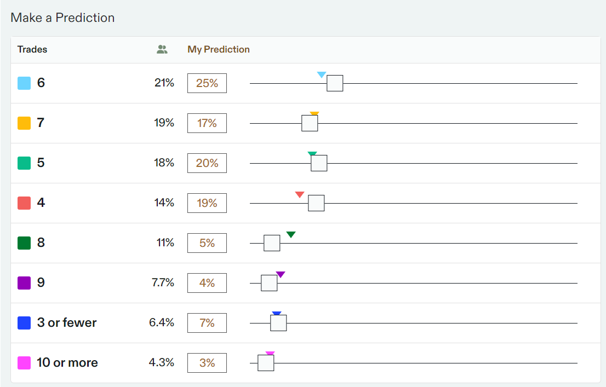
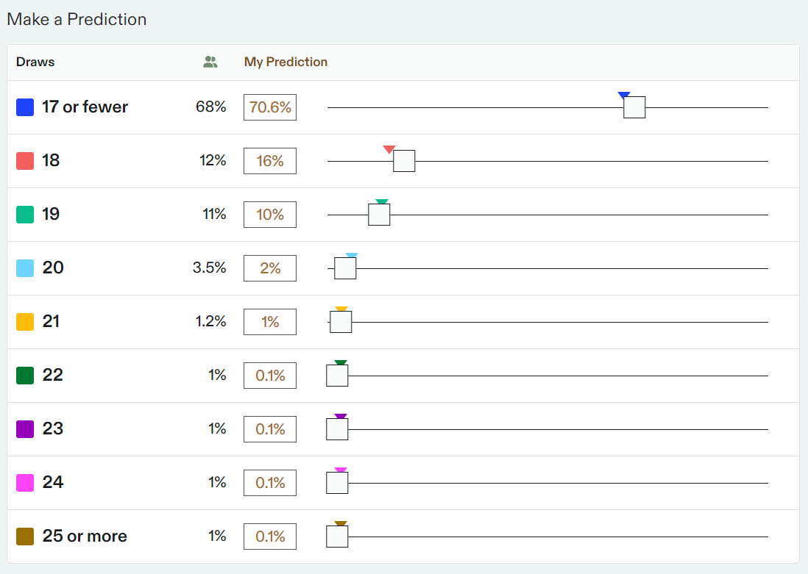
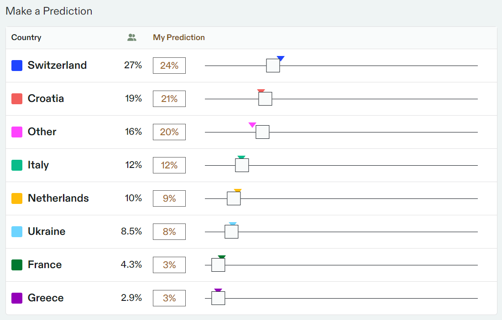

I've been reading a lot about forecasting lately, so when I saw on ACX that the forecasting platform Metaculus had partnered with the hedge fund Bridgewater to put on a forecasting tournament, I decided to throw my hat in the ring. Having made my forecasts, I thought it would be interesting and productive to try to explain my rationale for each prediction, question by question. I should note that I'm a complete amateur, and my relevant domain knowledge is pretty much nonexistent for every single question so far. But my hope is that forcing myself to explain my answers will lead me to more reasoned predictions and gain some insight into my own internal processes for forecasting and reasoning in general. Written 4/17.
4%. I did a minimal amount of research. There's a rumor floating around based on a screenshot of a potential leak indicating that the next GPT version would have a knowledge cutoff date in June, which would obviously mean that the version couldn't be released by May, but that screenshot has very questionable validity. From a quick look at OpenAI's release cadence and internet expectations, (reddit, manifold) this seems highly unlikely.
6%. I think I'm probably a bit extreme about this. It certainly seems unlikely that either side will reach a deal right now, but a month feels like a long time in this kind of thing. My initial thinking was that Iran's escalated involvement would make this even more unlikely, but a commenter in the tournament expressed the opinion that if anything it will actually increase the pressures felt by both sides to come to a ceasefire. I'm not so sure I agree with that, but it does cause me to question my certainty about my original assumption.
45%. My reasoning for this was very straightforward, and probably stupid: I don't think I can beat the stock market. If I had any clue which way individual stocks would trend, I'd be an investor, but I don't and I'm not. My only explanation for less than 50% is that the stock is currently trading under $900, and based off of my eyeball test of the stock's average volatility, I thought it slightly more likely to never reach $950.
4/20 Update: Wow. Nvidia's stock price really fell off a cliff over the last couple of days. It's now listed at close to $750. I've bumped my prediction all the way down to 10%. It would take quite a rally to come back from that.
63.0k (58.3k - 68.1k). This is just based on the community prediction, tempered very slightly by my irrational bias against crypto.
223 (200 - 244). This question felt relatively easy for me. Based on the preliminary reporting it seems like we're on track for a minimum of 200 tornados in April (we're already at > 150) and the general average in April is 220. I didn't do the math obviously, but I'd expect this forecast is closer to "optimal" than most of my others.
6%. I think I'll likely change this soon. This feels targeted at my bias as a wannabe coastal elite/pretentious douche. I think this movie looks terrible, and I say that as someone who enjoyed the 2010s trilogy. The director looks bad, the writer looks bad, and I just don't expect it to be very good or to generate much hype from consumers. That being said, the latest Godzilla v Kong movie somehow made > $80M like two weeks ago, and I wouldn't have expected anyone to go see that movie, so I'm clearly not well calibrated on the genpop's blockbuster action movie tastes.
48%. This question sucks. As a commenter said, I'd expect it to be 50/50 if the linked tool that the question is based on is accurate. I'm also much more confident that the tool is accurate than that I'm accurate. It seems clear that there won't be a rate cut in May, but I have no clue if it will increase in likelihood for June. I originally put like 5% or something, but that was when I misunderstood the question.
63%. The three factors I'm considering are how likely it is that the ship actually launches, how likely it is that the ship doesn't blow up or whatever rockets do, and how likely it is that the ship hits the altitude even if the flight goes perfectly. I found odds for the first question on Manifold at roughly 75%. My estimates for the other two are somewhere around 90-95%, so I just hit a rough guess of 63%.
45%. I truly do not know. It seems like Claude Opus is *probably* the best LLM currently, and it also seems unlikely that any other LLMs will be released in the next month that unseat it, but GPT4 is still neck-and-neck with it as of writing. Big shrug on this one.
65%. I had this at 15% until I checked this question to write this, and saw a commenter linking to a reuters article about a bill that was passed that Biden vowed to veto back in January. There's like no press following this action, but I'm not really confident at all anymore. I don't know how common it is for presidents to not veto something that they said they would, but my initial thinking on the matter was premised on pretty crucial congressional compromise ongoing over Ukraine/Israel aid, which I'd assumed Biden wouldn't want to mess with. Which still stands. But my intuition is that it seems more likely than not that he'd veto something he promised to veto.
5.03k (4.92k - 5.15k). This is pretty much just a distibution centered around where the S&P 500 is right now.
My research for this question consisted of looking at data from the last five years. I briefly tried to look at which teams were considering trading up or down in the first round, but that seems like it'd be at best the same level of uncertainty as just eyeballing. I'd have to calculate a probability for every team, which would require way more work than I'm willing to put into this.

So I've had to change my answer a LOT for this question. It'll likely be the first to resolve. I premised my initial prediction on a quick perusal of previous results. But with half of the rounds complete there's been an unnusually low number of draws so far, so I've lowered my predictions significantly (as has the community.)

35%. There had to be question like this in here. Given that he has five separate ongoing cases, and that almost all of them are candidates for this, I figured it's definitely not unlikely. That being said, there's only like 3 weeks for him to do this, which feels like a pretty short timespan. To be honest I really just don't have the necessary background to have a good intuition on this question, but I don't think this stuff happens all the time? I don't know, I'm starting to make myself feel stupid. Time to move on.
I don't know anything about this - I just went off the listed betting odds and made tiny adjustments for community. Which is what I assume everyone else did too.

8.75k (8.62k - 8.90k). This was just based on looking at historical trends, particularly data from recent months. I ended up literally exactly on top of the community prediction, which is probably about as good as I can hope for. It's interesting that there's apparently ~9M jobs open in the US right now. There's all of this back and forth in the op-eds of the NYT where some economist (i.e. Paul Krugman) will write that no, the economy really is good right now, and then the comments will be filled with people who are working seven jobs and still unable to pay for their rent and food. I don't really know who these people are that voice their economy anxiety into the comment section of the NYT, but I should really just stop reading them altogether. That aside, the point is that there's been an extended debate about whether the economy is good or not, and what's being felt by the American people. The numbers seem to suggest a definitive "yes" for the first question, and a much more lukewarm "things are mostly pretty good" for the second one. But it turns out that telling people that they're actually doing fine when they feel like they're struggling mostly just makes them mad.
152 (138 – 168). Yeah same as all these other questions where there's data from the past few months. My median is like spot on with community, while my tails are a bit more distributed. Is that the correct terminology? Probably not. Would I say I made a wider distribution?
9.71 (9.12 – 10.3). Same as the rest. Light duty vehicles are just passenger cars. I can't tell if it's exciting or still kind of grim that the share of new cars sold in the US is currently only ~10% electric. Feels like things are going a bit more slowly than you'd want.
Well. That's all I got for now. I'll keep this page updated as results roll in.